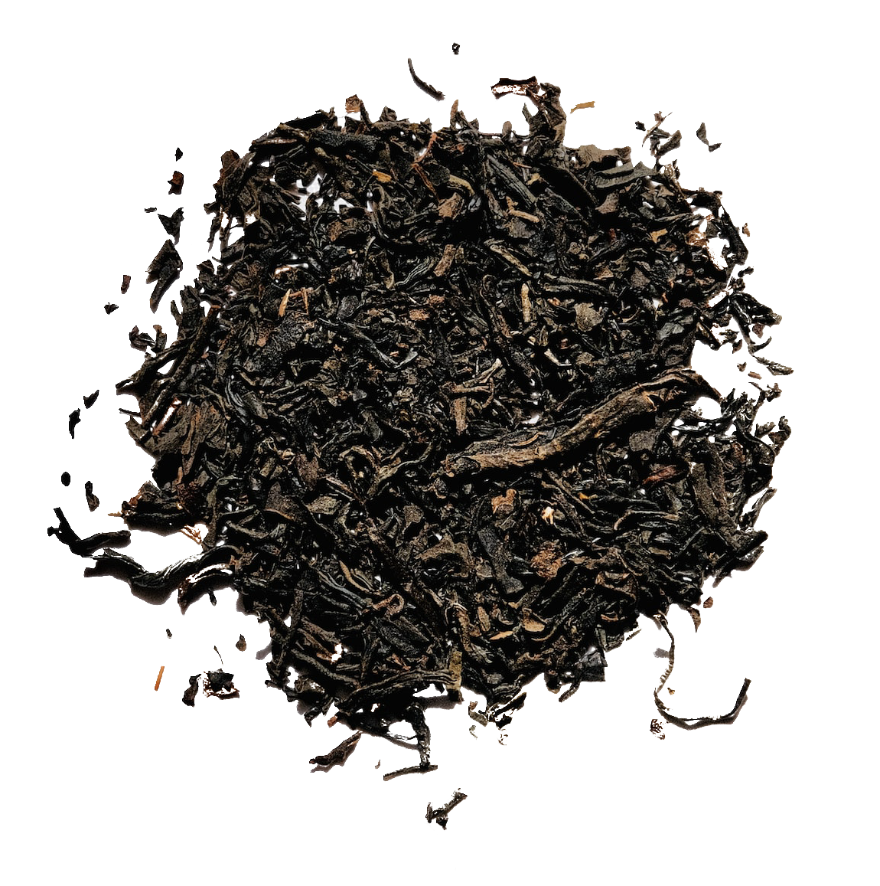

향기를 들이키다
카페를 가면 다들 어떤 음료를 시키시나요? 시원한 커피도, 달달한 스무디도 좋지만 가끔은 차가 끌리곤 합니다. 저는 어렸을 떄부터 기관지가 좋지 않아 차를 자주 마시곤 했는데, 그 때문에 일짝부터 향기롭고, 사람을 차분하게 만드는 차의 매력에 푹 빠졌습니다. 홍차, 페퍼민트, 녹차, 우롱차.. 세상에는 정말 다양한 종류의 차가 있습니다. 같이 차의 매력에 빠져보는 것은 어떨까요?
좋아하는 차 순위

1. 홍차

3. 레몬티

2. 페퍼민트티
향기롭고 은은한,
홍차
홍차는 제가 가장 좋아하는 차입니다. 종류가 아주 많고, 마시는 방법도 매우 다양해서 그날의 기분에 따라 골라서 마시는 재미가 있는 것 같습니다. 특히 저는 홍차 특유의 향기와, 약간의 떫은 맛을 좋아합니다.
새콤달콤 산뜻한,
레몬티
힘들었던 날에도 새콤달콤한 레몬차 한잔이면 피로가 풀리는 것 같습니다. 레몬을 평소에 즐겨먹지는 않지만, 차로 만들어 먹었을 때 그 매력이 더욱 돋보이는 것 같다고 생각합니다.
아침을 깨우는,
페퍼민트티
민트티를 마실 때 특유의 화한 느낌을 좋아합니다. 특히 아침에 일어나서 바로 민트티를 마시면서 하루를 개운하게 시작하곤 합니다.